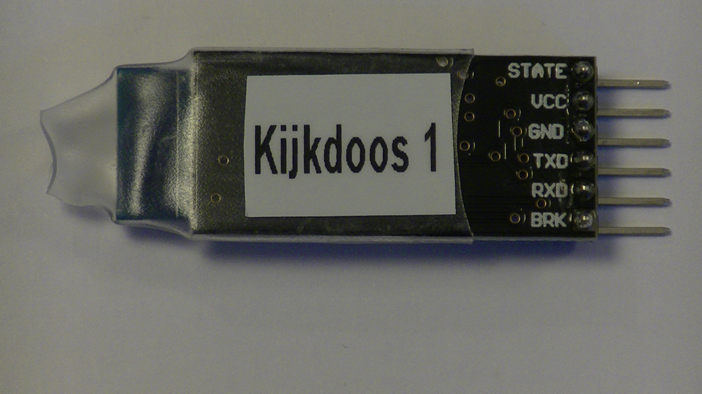

<!doctype html>
<html>
	<head>
		<meta charset="utf-8">
		<meta name="viewport" content="width=device-width, initial-scale=1.0, maximum-scale=1.0, user-scalable=no">

		<title>reveal.js</title>

		<link rel="stylesheet" href="css/reveal.css">
		<link rel="stylesheet" href="css/theme/ordina.css">

		<!-- Theme used for syntax highlighting of code -->
		<link rel="stylesheet" href="lib/css/zenburn.css">

		<!-- Printing and PDF exports -->
		<script>
			var link = document.createElement( 'link' );
			link.rel = 'stylesheet';
			link.type = 'text/css';
			link.href = window.location.search.match( /print-pdf/gi ) ? 'css/print/pdf.css' : 'css/print/paper.css';
			document.getElementsByTagName( 'head' )[0].appendChild( link );
		</script>
	</head>
	<body>
		<div class="reveal">
			<div class="slides">
				<section data-markdown>
					<script type="text/template">
						# IoT Kijkdoos

						Handleiding voor Devoxx4Kids
					</script>
				</section>
				<section data-markdown>
					<script type="text/template">
						# Wat ga je doen?

						Voor je ligt een pakket dat is uitgedeeld door het Ordina team. De komende 75 minuten ga je met dit pakket je eigen IoT Kijkdoos maken en besturen met de “IoT Kijkdoos” app. Als dat gelukt is ga je de Arduino programmeren door vier challenges uit te voeren. Vraag het Ordina-team om hulp als je er iets niet lukt.
					</script>
				</section>
				<section data-markdown>
					<script type="text/template">
						# Maar, hoe dan?

						1. Eerst volgt een uitleg over de hardware
						2. Vervolgens wordt uitgelegd hoe je de hardware moet aansluiten
						3. Dan ga je de aansluiting testen met de Android of iPhone app
						3. Als alles werkt kun je de kijkdoos gaan inrichten

						Deze presentatie helpt je met bovenstaande stappen.
					</script>
				</section>
				<section data-markdown>
					<script type="text/template">
						# Aan de slag!
					</script>
				</section>
				<section data-markdown>
					<script type="text/template">
						# Arduino

						

						De Arduino bevat de microcontroller die je straks gaat programmeren.

					</script>
				</section>
				<section data-markdown>
					<script type="text/template">
						## Printed Circuit Board (PCB)

						

						Het PCB maakt het mogelijk om makkelijk de andere hardware aan te sluiten op de Arduino. Zo bevat het een beschrijving waar de hardware op aangesloten moet worden.
					</script>
				</section>
				<section data-markdown>
					<script type="text/template">
						# Actie
						## Plaats het PCB op de Arduino

						<video autoplay loop src="mov/PCB onto Arduino.mp4" type="video/mp4" height="400px" />
					</script>
				</section>
				<section data-markdown>
					<script type="text/template">
						## Bluetooth

						Met Bluetooth is het mogelijk om apparaten draadloos met elkaar te verbinden. Met de app die je straks gaat downloaden maak je gebruik van Bluetooth om de Arduino te bedienen.

						<figure style="display: inline-block">
							
							<figcaption style="font-size: small">Voorkant Bluetooth module</figcaption>
						</figure>
						<figure style="display: inline-block">
							
							<figcaption style="font-size: small">Achterkant Bluetooth module</figcaption>
						</figure>
					</script>
				</section>
			</div>
		</div>

		<script src="lib/js/head.min.js"></script>
		<script src="js/reveal.js"></script>

		<script>
			// More info about config & dependencies:
			// - https://github.com/hakimel/reveal.js#configuration
			// - https://github.com/hakimel/reveal.js#dependencies
			Reveal.initialize({
				controls: false,
				dependencies: [
					{ src: 'plugin/markdown/marked.js' },
					{ src: 'plugin/markdown/markdown.js' },
					{ src: 'plugin/notes/notes.js', async: true },
					{ src: 'plugin/highlight/highlight.js', async: true, callback: function() { hljs.initHighlightingOnLoad(); } }
				]
			});
		</script>
	</body>
</html>
